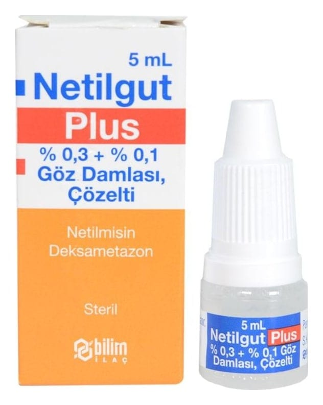

Netilgut Plus % 0,3+ % 0,1 Göz Damlası, Çözelti, 5 ml

Ne için kullanılır
KT · Bölüm 1NETİLGUT PLUS, beyaz polipropilen kapak ve rondela ile ambalajlanmış, kendinden damlalıklı, yarı-şeffaf, LDPE şişede 5 mL göz damlası çözeltisi ve kullanma talimatı ile birlikte sunulmaktadır. Berrak, renksiz veya hafif sarımsı çözeltidir.
NETİLGUT PLUS, netilmisin ve deksametazondan oluşan iki etkin madde içerir. • Netilmisin bakterileri öldüren bir antibiyotiktir. • Deksametazon ise inflamasyonu ve iltihabı azaltan bir kortikosteroiddir. NETİLGUT PLUS, yetişkinlerde şişmiş, tahriş olmuş ve muhtemelen bakterilerle enfekte olmuş Bu ilacı kullanmaya başlamadan önce bu KULLANMA TALİMATINI dikkatlice okuyunuz, çünkü sizin için önemli bilgiler içermektedir. • Bu kullanma talimatını saklayınız. Daha sonra tekrar okumaya ihtiyaç duyabilirsiniz. • Eğer ilave sorularınız olursa, lütfen doktorunuza veya eczacınıza danışınız. • Bu ilaç kişisel olarak sizin için reçete edilmiştir, başkalarına vermeyiniz. • Bu ilacın kullanımı sırasında, doktora veya hastaneye gittiğinizde doktorunuza bu ilacı kullandığınızı söyleyiniz. • Bu talimatta yazılanlara aynen uyunuz. İlaç hakkında size önerilen dozun dışında yüksek veya düşük doz kullanmayınız.
gözlerde bakterileri öldürmek ve inflamasyonu azaltmak üzere kullanılır.
Tedavinin sonunda daha iyi hissetmemeniz veya daha kötü hissetmeniz halinde bir doktora danışmalısınız.